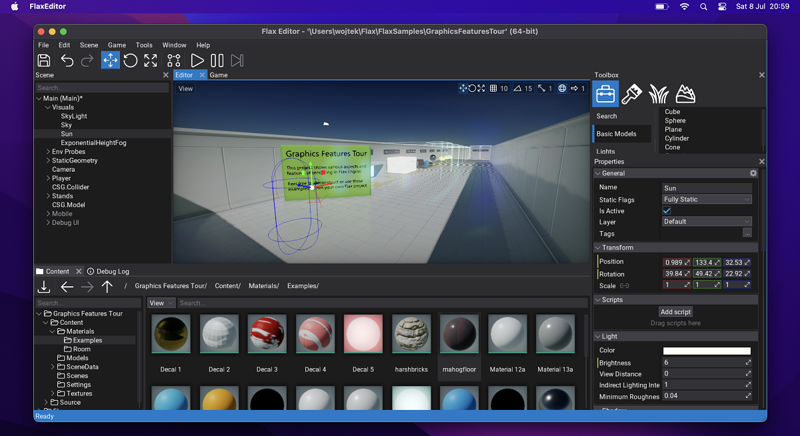

Flax 1.7 release notes
Highlights
Better Licensing
Flax Engine End-User License Agreement (EULA) has been updated to be less strict in certain areas. We believe that the current revenue-share-based model acts well and is a fair price for the engine with the tools we provide (4% of gross revenue above $250,000 per calendar quarter). However, we wanted to loosen licensing terms in favor of our users. The following changes were made:
- Removed ability to revoke or terminate the license.
Section Term and Termination has been removed. We won't be able to cancel the license from anyone.
- Added limitation on a maximum of one license modification per calendar quarter.
Section Amendments to this Agreement has been updated to limit possible EULA modifications to once per calendar quarter (as opposed to an unlimited amount of amendments before). For the past 3 years, we've updated EULA only twice: both times in favor of our users. We're committed to stable licensing terms that bring more trust to our clients.
- Added ability to keep using previous EULA version when it's amended.
Section Amendments to this Agreement has been updated to allow users to continue using the previous EULA version without a need to accept the new one as long as you keep using engine and tools version from before the license update. For example, if you start developing a game with Flax 1.7 using the current EULA and the license gets modified during your project development (eg. within the next 2 years) then optionally you can stay on the latest Flax version prior to the license update and skip acceptation of the new licensing terms. This means the license is not retroactive to the engine versions. We believe this change will allow developers to easily plan longer game productions without fear of license changes that could affect business costs.
- Added detailed explanation on advance payments.
Section Royalty defines which revenue is accountable for 4% revenue share. It includes revenue from advance payments for the game such as payments from a game publisher. Royalties that you pay on advance payment of revenue for a game that is recoupable by the payer, such as a publisher, may be credited against future royalty payments that you incur under EULA for that game. This means, for example, if the publisher pays you $1,000,000 in advance payments (directly into game development), the royalty to Flax would be $30,000 (4% of the value above the first $250,000 per calendar quarter). Later, once the game generates revenue this advance payment is recoupable from the future royalties. For instance, if this game earns $1,500,000, the royalty would be $20,000 instead of $50,000 due to recouped advance payment.
Regular Engine Updates
We've updated our Release Policy to deliver more frequent engine updates in-between major releases. For the past years, Flax updates (eg. 1.4, 1.5) happened every ~4 months and we will continue to do so. In addition to that, we will support the latest stable version with monthly patch updates (eg. 1.7.1, 1.7.2). Until now we released only critical bug fixes and security updates which left large gaps in the engine roadmap timeline where most of devs used daily master builds that are not guaranteed to be stable.
Currently, Flax grows quicker every day, we have more users and contributors than ever. Because of that, we want to keep the agile nature of the project. Finally, we've set up milestones plan for long-term planning. This helps to structure daily operations and keep track of which issues will be resolved and when.
Cloth

For this release, we added physical Cloth simulation with tooling. New Cloth actor uses vertices of the mesh as cloth particles and simulates them with physical properties, forces, constraints, and collisions. Under the hood we use NvCloth library and run simulation in async via Job System which results in great performance even with multiple clothes being actively simulated.

Flax Editor contains in-built cloth painting tools with per-vertex paint brush. We've added sample cloths to Physics Features Tour project in Flax Samples. To learn more about clothing tools see this documentation.
Behavior Trees
Another big feature in this release is a system of Behavior Trees used for gameplay programming. Behavior trees are a popular AI technique used in many computer games to design and simulate intelligent characters, agents, or objects. A behavior tree is a combination of many different AI techniques: hierarchical state machines, planning, scheduling, and action execution. The key advantage of behavior trees is that they are quite easy to understand and can be created with visual editing tools rather than code-only.
Behavior Trees were designed to be very extendable by both game and plugins. You can create custom node types and wrap any data into the Behavior Knowledge via Blackboard or Goals (our unique concept of behavior data). Finally, Editor contains Behavior Trees editor with live debugging utilities.
To learn more see this documentation.
Performance Improvements
We've always been committed to great performance. This time we've focused on large-scale projects (eg. scenes with 40k objects) and polishing our custom .NET bindings code that links C# and C++ runtimes together. Physics simulation with thousands of active bodies is more stable with new physics collision events reporting and new delegate events table storage.
We've started refactoring scenes loading to run as much as possible in async via Job System. Now, in 1.7 actors and scripts are created via Job System (as shown in the picture above) which results in large performance benefits in large worlds or levels using many prefabs. For the next update (1.8), we plan to continue this and implement async scene objects deserialization via Job System. This will further improve performance.
Editor Improvements
Every update brings many large features but also tons of smaller things that matter to the Editor. Here is a list of notable ones:
- New plugin project creation tool in Editor (Plugins Window, see picture below),
- Plugin adding utility via
git clone(eg. adding plugin from Github, see picture below), - Content browser improvements - new look, more features for sorting and items displaying,
- New Spline editing tools,
- Network profiler with object replication and RPCs stats,
- Missing script utility to quickly re-add missing scripts in Editor (eg. after renaming class),
- Automatic game settings apply when saving json file in Editor.
Improved Editor for macOS

Flax userbase on macOS is growing fast! In order to smooth the usability on that platform we've fixed many bugs related to .NET SDK detection, input, dockable windows usage, and much more. Starting from now we will provide code signed Flax Editor for macOS arm64 (.dmg binary). It will include an engine built for macOS and iOS to easily cook games for those platforms.
We've added file watcher support to handle the hot-reloading of scripts and shaders. The graphics backend will handle proper MoltenVK runtime with the latest Vulkan SDK.
Onboarding Experience Improvements
Due to the recent rapid growth of Flax users we've worked on improving the onboarding experience. This includes:
- Improvements to .NET SDK installation detection in Editor,
- Improvements to Visual Studio, VS Code and Rider code editors integration,
- Fix stability of Launcher downloading daily
masterbuilds from Github Actions, - Release of official Editor for macOS package,
- Lots of bugfixing.
Migration Guide
Scripting Changes
- Scripts
OnDestroymethod is now called afterOnDisablebut before Actor's childrenEndPlayto properly handle script lifetime logic in game code. - Scene objects (actors and scripts) are now created in async via the Job System when loading the scene:
- This applies to objects spawning only - constructors will run in async,
- All script/method methods like
OnEnable/BeginPlayare still called in sync on a main thread, - Large levels loading time has been decreased significantly,
- Soon object deserialization will run in async too to further improve performance.
Refactoring
- C++
Delegatehas been refactored to useHashSetandCriticalSectioninstead of function table with atomics:- All events are now unique (cannot bind the same function twice),
- Events order is undefined,
- Performance in large projects has been improved significantly,
- Can be disabled in custom engine via
DELEGATE_USE_ATOMIC 1inDelegate.h.
- C++
ArrayExtensionshas been refactored to use FlaxFunctioninstead ofstd::function. - Renamed
GPUPipelineState::Description::PrimitiveTopologyTypetoPrimitiveTopology. - Refactor Editor splash screen quotes to be less offensive.
- Say goodbye to some nasty/inappropriate jokes - as Flax matures and has to well behave.
Other
Releasebuilds won't use assertions by default to improve the performance of the engine at the cost of undefined behavior (UB) - C++CHECKmacro will still be active.- Remove unused
TIsArithmetictemplates. - CPU and GPU profiler events are disabled by default and only enabled when using the profiler in Editor.
- Use
ProfilerGPU.Enabled = trueto get GPU frame time from game code at runtime.
- Use
Changelog
Version 1.7.6407.2 - 20 December 2023
Contributors: mafiesto4, Tryibion, GoaLitiuM, Withaust, Menotdan, NoriteSC, mtszkarbowiak, Just-Feeshy, MineBill, nothingTVatYT
PRs merged: 29
- Add invert green channel option to texture tool
- Add various .NET and VSCode intellisense fixes
- Add new icon for macOS
- Add automatic code modules references adding when cloning plugin project
- Add saved colors to color picker
- Add infinite loop to behavior tree
Loopdecorator - Add option to import model file as Prefab
- Add
ModelPrefabto imported model prefab for reimporting functionality - Add various improvements to models importing code
- Add support for loading prefab instance if the root was changed or deleted
- Add support for displaying and reverting array values to prefab value in properties panel
- Add removing thumbnails for deleted assets
- Add
HalftoVector2/Vector4 - Add
Where,SelectandRemoveAlltoArrayExtensions - Add
SloppyOptimizationdisabledby default and lower defaultLOD Target Errorvalue for model auto-LOD - Add better
ScaleWithResolutiondefaults in Canvas Scaler - Add
Asyncto anim events (falseby default) to delay events execution into main thread and prevent multi-threading issues by default - Add
PixelFormatExtensions::ComputeBlockSize - Add ability to change default Android screen orientation
- Add better Visual Script debugger tooltips display
- Add mouse tracking on Linux
- Add context menu to load additional scenes quickly
- Add auto-sizing for box colliders when they are added to the scene
- Update
meshoptimizertov0.20 - Optimize time service update math code
- Remove old warnings about invalid model instance buffer
- Replace
ImportedModelDatawithModelDatafor model importing - Refactor
INetworkDriver::PopEventto use network event as output parameter rather than raw pointer - Refactor objects splitting in models importing to be handled by
ModelToolnot the importer code itself - Refactor prefab's
objectsCacheto be explicitlySceneObjectvalues - Refactor memory allocators to use dedicated path when moving collection data that is not blittable
- Refactor Visual Script debugger apis to use bindings generator
- Refactor Physics Colliders to use auto serialization
- Fix ability in editor to delete content and source folders
- Fix tooltip location check when wraps over the screen
- Fix UI Dropdown size issue with large font
- Fix selecting prefab object when object from prefab is already selected
- Fix constant value sliders in material graphs to not be used due to shader compilations
- Fix deadlock in
NetworkManagerwhen network peer returns invalid event type - Fix zero clamp on hinge velocity to allow negative values
- Fix
__cplusplusmacro on MSVC and add logging C++ version used during compilation - Fix missing channel masking in material Scene Texture node
- Fix missing surface graph edited flag after removing anim graph state transition
- Fix missing output parameters conversion when calling interface implementation in scripting
- Fix selecting objects/gizmos with high far plane
- Fix blending additive animations
- Fix
MissingScriptto be added only when object type exists (skip for prefab instances) - Fix not showing primary context menu on Visject surface if child control handled input event
- Fix layout of editor updating when adding a script to multiple actors in a scene
- Fix incorrect empty meshes/LODs removal after auto-lod generation
- Fix invalid codegen for array reference passed as output parameter in scripting interface method
- Fix incorrect pointer marshalling from
Variantto managed runtime - Fix model asset thumbnail if mesh is not centered around origin
- Fix prefab window performance with large hierarchies
- Fix not supported dragging prefab actors between windows
- Fix spawned prefab name after drag&drop into prefab window
- Fix invalid BT node decorator linkage after removing it
- Fix invalid tracy events from C# profiling api when profiler gets connected mid-event
- Fix .NET runtime packaging with installed .NET 8 SDK
- Fix Visual Studio build issues with C# projects when engine path has spaces
- Fix Json serialzier regression after hot-reload
- Fix
Swapfor non-copyable types - Fix swapping core collections
- Fix project initialization with
-newif it already exists - Fix calling script
OnDestroywhen removing actors or scripts from the scene - Fix several actor types performing default spawn behavior when spawning from a prefab
- Fix docking windows on Linux
- Fix importing
.ddsfilesas-isif the compressed image is too small for the engine (block size validation) - Fix dark outline around Screen Space Reflections alpha blending area
- Fix default prefab instance not taking into account root position
- Fix plugin clone and loading to wait for
gitprocess end properly - Fix managed method delegate creation to be thread-safe
- Fix typo in
Tagcomparison function - Fix render target pool over-allocation when changing render resolution frequently
- Fix deadlock in
Asset.WaitForLoadedwhen loading task hangs in the loading queue for a main thread sync - Fix deadlock when loading block-compressed texture that is smaller than block size
- Fix deadlock in asset thumbnails rendering queue when texture streaming fails
- Fix various crashes
- Fix crash in UI prefab changes apply when reparenting controls
- Fix crash when boxing native non-POD structure into managed format
- Fix crash when updating prefabs from async thread
- Fix crash when spawning actor from asyc thread into the SceneObject
- Fix crash when unloading texture that has active streaming tasks
- Fix crash when resizing navmesh capacity with crowd created for that navmesh
- Fix crash when drawing terrain without cached neighbor chunks
- Fix crash in mesh LOD generator if generated mesh has more indices
- Fix crash in Content Storage async job when someone is using file storage and access cannot be freed
Version 1.7.6406.1 - 25 November 2023
Contributors: mafiesto4, Tryibion, GoaLitiuM, mrunion, MineBill, RuanLucasGD, Tryibion, Chikinsupu, NoriteSC, Menotdan, SinnersSum, Radiangames, schmidt-florian, HydrogenC, nothingTVatYT
PRs merged: 43
- Add SetThreadAffinityMask and SetThreadPriority and thread name for Apple platforms
- Add storing shader asset includes paths in compact format for portability
- Add unit test for
HashSetandDictionarycollection types - Add debug drawing contact offset for selected collider
- Add custom model picker in material preview
- Add
CustomScenesfeature to draw a fixed set of scenes withinSceneRenderTask - Add minor improvements to reference properties
- Add more alternative titles to Surface nodes
- Add order and ordering options to comments in Surface graph
- Add
SortScoreto Visject node archetypes and use it to favor method overrides in Visual Script - Add Convert to Parameter for Surface constant nodes
- Add support for unlimited window size if
MaximumSizeis set to zero - Add spawning UI Canvas Scaler when adding new UI Canvas
- Add handling
ViewLayersMaskfrom camera when rendering UI Canvas - Add copying old UI Control data to new UI Control when changing type
- Add option to limit number of items in Dropdown popup
- Add optional scrollbar to Dropdown popup list
- Add immediate game viewport sync after aspect ratio change in Editor
- Add new light theme to Editor UI
- Add better formatting for automatic tooltips in Editor from xml comments
- Add input bindings for game window mouse unlock and toggle fullscreen
- Add button to reload scenes via Editor menu
- Add short delay before auto-selecting editor tab on drag over header
- Add rebuilding navigation mesh after apply changes in Navigation asset
- Add dragging items support into lists and arrays in the Properties window
- Add
CalculateBoneOffsetMatricesoption to fix some animated model skeletons rendering - Add
GetRotationFromToandFindBetweenutilities to C#QuaternionAPI - Add
GetSplineSegmentLengthto get spline segment length - Add new material nodes:
Rectangle Mask,FWidth, andAA Step - Add default value for material
Sphere Masknode to create blob gradient around UV center - Add
SetNodeTransformto Animated Model - Add waking up rigidbodies when changing kinematic state
- Add name to Android main thread
- Add limits to cloth brush values
- Add support for including global configs in engine configuration options
- Add .NET SDK version
7as forced to be used during game cooking (dotnet8 can be sued with Editor) - Add clearing BT memory in non-release builds to make issues spotting easier
- Add better errors logging to BT nodes in case of issues
- Add soft check for null managed object value for unboxing
- Add
Styleproperty getter toFontAssetto access its style flags - Add engine version in Editor main window title
- Add security lockers for managed typeinfo access
- Add git submodule init to git project cloning
- Add support for getter-only properties in blackboard selector access
- Add automatic show of skeleton when entering skeleton tab in skinned model editor
- Add extended buttons support for Linux
- Add
XDG_DATA_HOMEenv var usage the approved default as per specification on Linux - Add
GetStackFramesandIsDebuggerPresenton Linux - Add
GetStackFrameson Android - Add decoding stack trace function names on Apple platforms
- Add always logging unhandled C# exception
- Add better support for .NET SDK and .NET 8
- Add
-dotnet=vercommand arg toFlax.Buildto specify .NET SDK version to use for build - Add better project files generation for Rider
- Optimize
Control.UpdateTransformfor faster UI math - Improve Cloth usage
- Use soft asset ref to graphics settings
- Update Tracy Profiler to
0.10 - Continue
Delegaterefactor to use single memory allocation and atomic operations for data access - Remove
SHADOW_MAPS_FORMATand support fallback formats for shadow maps - Remove actor layer auto apply via message box dialog during Play Mode
- Remove unsupported material parameter types
QuaternionandTransform - Reduce
LargeWorlds::ChunkSizeto8192 - Refactor
GPUResourcePropertyto cleanup code - Refactor main editor viewport and prefab viewport to share dragging handling code
- Refactor default
ContactOffsetforColliderto be2(keep10forCharacterController) - Refactor
HashSetandDictionarycollections capacity to handle rehashing when too many elements were deleted - Fix
DeepClone()when used on object of different runtime type - Fix CultureInfo to handle missing country code and fallback to outer language code
- Fix various typos and wording in docs
- Fix incorrect tabs selection handling when tab gets removed
- Fix various cases of closing window tabs when using Dock Windows in Editor
- Fix color picker dialog not staying inside the current screen
- Fix custom editor layout rebuilding when it has more editors in use
- Fix error during new json asset creation via
ContentContextMenuif the class is missing empty constructor - Fix various cases of closing window tabs when using Dock Windows in Editor
- Fix Output Log window to scroll log on startup properly
- Fix
CollectionEditorto properly support editing multiple arrays - Fix Dropdown popup to properly scale when using Canvas Scaler
- Fix common Editor tooltips with hardcoded keybindings
- Fix color editing control to properly handle mouse event
- Fix anim slot from playing animations more than 1 time based on speed
- Fix
NetworkTransformto properly reject local simulation deltas on incoming authoritative transform data - Fix BehaviorTree node UI after adding decorator that was already there
- Fix
BitArray::SetAll()when the item is not multiple of8 - Fix some Center geometry import issues and add option to be able to shift mesh to local origin
- Fix generic types including to be recursive in C++ bindings codegen
- Fix content storage usage with relative paths
- Fix issue involving stale scripting assemblies in
FlaxEngine.Jsondynamic type resolution - Fix incorrect directional light shadows influence on secondary render views
- Fix incorrect spline length calculation if first point is not at spline origin
- Fix missing interfaces support in
Actor::FindScript - Fix missing initialization of scene objects added from prefab
- Fix marking scene as dirty when creating prefab from existing actor
- Fix unpacking
Float3and other inbuiltVarianttypes via Unpack node in Visual Script - Fix issue with asset loading to be properly canceled when reimporting file
- Fix loading delay-loaded-dll on Windows when using project plugin with native dependencies
- Fix bug when spawning new prefab objects during scene load due to regression in async scene init
- Fix memory leak while doing drag&drop with Debug Draw in use
- Fix Visual Script parameter setter node to accept multiple input flows
- Fix scenes reload feature to check if can do it, properly use async in play mode and ask for save if scene is modified
- Fix missing script replacement if data has object id that doesn't match current parent
- Fix Mono GC threads suspend to not deadlock when attaching native threads to managed runtime
- Fix Steam AppId if settings asset is missing and force keep it in sync with
steam_appid.txtfile (Steam Online Platform) - Fix PostFx settings in Graphics Settings to be only used when checked as override
- Fix BT logic flow when start/stopping behavior
- Fix deadlock regression when saving Visual Script in Editor with active instance objects
- Fix deadlock in editor when using snap to the group with actor that has empty bounds
- Fix
Win32CriticalSectionto use spin count of4000instead of just100 - Fix crashes in various dictionary usages caused by duplicated keys
- Fix crash when creating empty cloth
- Fix crash when trying to build navmesh with null scene
- Fix crash on negative collection capacity due to
int32maximum value limit - Fix crash when not clearing Online Platform in Editor before hot-reload
- Fix crash when rigidbody gets deleted during physical collision
- Fix crash on editor startup without code editor selected
- Fix crash on hot-reload in Editor due to leftover scripting events in
ScriptingEvents::EventsTable - Fix crash in Global Surface Atlas when dirty object is missing
- Fix crash in Multi Blend 2D node in Anim Graph when using single animation on a triangle
- Fix crash during asset loading due to potential threading issue when 2 threads load the same asset
- Fix crash when debugging BT node state while tree is not running
- Fix crash when reading
BehaviorKnowledgeSelectorvalue in C# when type doesn't match exactly
Version 1.7.6404 - 31 October 2023
Contributors: mafiesto4, Tryibion, Withaust, GoaLitiuM, Rayumie, mtszkarbowiak, NoriteSC, envision3d, RuanLucasGD, wackoisgod, Walrusking16, eLeSTRaGo-Dev, FREEZX, M-3-H, MineBill, Crawcik, dector, Chikinsupu, Radiangames, stefnotch, solnem, AndrejStojkovic, Zode, davevanegdom, Arcnor, RedTheKitsune, Swiggies, Menotdan, nothingTVatYT, GasimoCodes, ontrigger, Muzz, meabefir, Vizepi
PRs merged: 233
- Add Cloth simulation with physics
- Add cloth painting tools to Editor
- Add async cloth simulation via Job System
- Add distance-based and frustum-based culling to cloth
- Add
MeshReferencetoModelInstanceActorfor easy mesh referencing and its data access interface - Add
MeshDeformationutility for generic meshes vertices morphing (eg. via Blend Shapes or Cloth) - Add
NvClothdependency - Add copy/move ctor/operator to
Delegate - Add
NavMeshRuntimeto scripting api - Add
MoveTowardsto Vector3 - Add stencil buffer support to
GPUPipelineState - Add
GPUContext::SetStencilRefto stencil reference value - Add
DebugDraw::DrawLinewith separate start/end colors - Add
RenderTools::CalculateTangentFrameutility - Add
ReadOnlytoCustomEditorPresenter - Add
Variant::AsStructure()to comparision operator betweenVariantTypeandScriptingTypeHandle - Add
SerializableScriptingObjectfor easier serialization of scripting objects in gameplay or content - Add
IPresenterOwnerto editor Custom Editor for more context and advanced interactions - Add
GroupArchetypeto Visject nodes spawn query check - Add
SealedNodesfeature to Visject Surface nodes - Add
SurfaceNodeActionsfor more contextual surface nodes scripting - Add
OnPastedto Visject Surface nodes for custom post-paste logic - Add Visject surface boxes and connections drawing customization via style
- Add reroute node usage to Visject only if surface type allows it
- Add
AImodule to engine - Add Behavior Trees editing and simulation
- Add
BehaviorKnowledgeSelectorfor Behavior Knowledge unified data access - Add
GetDebugInfoto BT nodes for debugging - Add Decorators to Behavior Tree
- Add concept of Goals to Behavior Knowledge
- Add animation asset input box to animation sample node
- Add
HasDepthClipto GPU Device limits - Add
foreachloop support toSpantype - Add checking for
Altkey pressed to expand/collapse all actors in hierarchy - Add
IsDebuggerPresentfor macOS and iOS platforms - Add better viewport camera settings and control
- Add
GetHashto Vector types - Add support for using
Revisionnumber in projects version - Add support for runtime running on GPU without Compute Shaders support
- Add logging any XAudio2 backed errors
- Add
Spacebarto toggle play/pause in Audio Clip window - Add data sent/receive rate charts to the network profiler in Editor
- Add outputting shader source code in Editor to text file when compilation fails for debugging
- Add changing terrain brush size with
Shift + Scroll - Add default font bundling (optional) and setup UI Style to match editor logic
- Add preventing project file regeneration running while compiling scripts
- Add delay to compiler and project generation after large file operations in Editor
- Add
SubAssetFolderto model import option to redirect auto-imported materials and textures location - Add excluding GPU swapchain present time from CPU draw time in profiling tool
- Add showing full exception message in error message box for managed exceptions
- Add popup to editor options closing to remind the user to save
- Add more Editor input binding options
- Add context-sensitive node search to Visject (surface editor)
- Add automatic casting setup to Visual Script graph editor
- Add several fixes to UI sizes when fonts are larger in Editor (eg. when using custom fonts)
- Add customizable statusbar colors to Editor theme (change playmode status color to green)
- Add
View Layersoptions and Reset/Disable/Copy/Paste buttons editor viewport options - Add
RenderFlagsandRenderViewtoCameraactor properties - Add tooltips to move with the mouse cursor
- Add automatic module creation via Content window context menu (in game
Sourcefolder) - Add using text
Show in Finderon macOS in Editor - Add button to position camera to editor viewport view
- Add showing only collision wireframe in
CollisionDataWindow - Add Main Window to C# through
Screenclass - Add
SmoothDampforVector2andVector3 - Add
BaseLinesGapScaleconfigurable forLabel - Add improved mouse wheel scrolling behavior in UI
- Add handling double clicking in
CheckBox,Button,DropdownandDropPanelcontrols - Add the option to import materials for a model as instances of another material in the project
- Add support for importing embedded textures via
Assimpimporter - Add auto-rename start when adding new actor in Scene Tree window
- Add automatic game settings apply when saving json file in Editor
- Add collision type to model importer
- Add bending for connections around nodes in Visject graph editor
- Add improvements to Clang compiler detection
- Add better Visual Studio project Ids preservation when regenerating script project files
- Add always generate additional Visual Studio solution files for all platforms (improves VSCode and Rider usage)
- Add building C# bindings after generating engine project files
- Add VS Code launch task for attaching native debugger
- Add remapping non-native Editor VS build configurations to native configurations
- Add Rider-specific user solution configuration files generation
- Add thread-safety to various scripting methods
- Add better missing script handling in Editor
- Add Game Settings open button to Edit menu
- Add input states to
InputEventandAxisChangedevent toInputAxis - Add
SelectionChangedpublic event forVisjectSurfaceand properly invoke it only when selection actually changes - Add ignoring types with
CompilerGeneratedAttributein Editor - Add
ScriptingTypeto msvc natvis - Add
GetCollidersutility toRigidBody - Add allow using
CustomValueContaineras readonly if setter action isnull - Add
MarshalAstag to API structs/classes for custom marshaling via implicit casting - Add
internalaccess level to Scripting API members (field, properties and functions) - Add support for accessing scripting properties via
ManagedBinaryModulefields API - Add double-reference support for scripting function parameters to move value
- Add
Random::RandRange - Add spot light inner circle debug lines
- Add light debug view flag to draw light shapes
- Add grid scale to the editor viewport settings
- Add quick
Cook&Runbutton, Play in Editor actions, and customizable number of players setting - Add locked focus to Editor (
Shift+F) - Add a generic version of
AssetReferenceAttribute - Add
NetworkReplicator::ResolveForeignObject - Add
Object::DeleteObjectNowasObject.DestroyNowin scripting - Add
ModelInstanceActor::GetMaterialto get actual material used to render certain entries - Add
ModelInstanceActor::GetMaterialSlots - Add showing rendering material to model entries
- Add improvements to various context menus in Editor
- Add batch creating prefabs from multiple selected actors in the scene tree
- Add scroll to selected asset/content item on asset picker select menu open
- Add pasting at same level as selected actor parent node instead of under selected node
- Add functionality to combine similar Debug Logs into a log with a count
- Add
paramstag toAPI_PARAMfor C# variadic parameters support - Add user defined analyzers/source generators support in
Flax.Build - Add build option to change code optimization level in C# modules
- Add default C# code optimization in Editor development builds
- Add
sealedtag to virtual functions in API bindings to block inheritance in C#/VS - Add common .NET SDK preprocessor definitions
- Add skipping post processing when tonemapping and camera artifacts are disabled
- Add
HasBorderoption toButtoncontrol - Add borderless window switch at runtime (Windows only for now)
- Add ability to clean terrain patch caches
- Add macOS message box with buttons
- Add versions sorting to VulkanSDK selection on macOS
- Add ignoring
.DS_Storefiles in Content on macOS - Add
FileSystemWatcherfor macOS to track file changes in Editor - Add codesigning to macOS editor package binaries
- Add control/command/option keys handling on macOS
- Add shwoing Json Asset type on ToolStrip of Json Asset window
- Add timeline position numbers and add to GUI
- Add a way to reset an
IBrushto null for default functionality in Editor - Add
MethodandOrigintoProgressBarfor custom progress drawing - Add automated plugin project creation and Git cloning in Editor
- Add tab breaks for window tabs
- Add new look to Content items
- Add sorting plugin projects in content tree
- Add showing/hiding engine/plugin/misc/generated files in content tree and view
- Add slider control to UI library
- Add
InputEventandInputAxiseditors with pickers - Add
InputEventforUICanvasnavigation actions - Add shift + tab support in UI navigation
- Add ctrl+backspace support to Text Box
- Add more border options to several controls
- Add MMB Panning to Visject Surface
- Add highlighting when mouse is over slider thumb
- Add new Spline editing tools for Editor
- Add editor shortcuts usability when toolstrip or main menu controls are focused
- Add support for editing
WheeledVehiclewheels config at runtime without full physics state rebuild - Add support for editing
WheeledVehicleengine/differential config at runtime without full physics state rebuild - Add remove tag method to actor
- Add conditional profiling in Editor (run only when using Profiler window)
- Add
DebugDraw::DrawRayfunction - Add
WindowBase::Resizeddelegate - Add using exact C# method profiler data for profiler events in overriden thunk method callbacks
- Add support for unsubscribing from managed events multiple times
- Add missing
Particle Scalegetter node to Particle Emitter graph - Add bigger size of clamp node to handle vector4 in Visject surface editor
- Add
PCM(GJK-based distance collision detection system) to PhysX - Add
SolverTypeandBroadPhaseTypeto Physics Settings for simulation configuration - Add ability to choose sloppy mesh simplification or not in model import settings for LODs (better quality Auto-LOD)
- Add
ObjectRadiustoDrawCallto properly cull local lights and env probes in Forward Shading - Add objects replication and RPC stats table to Network Profiler
- Add VS folder structure for BuildScripts and FlaxEngine source files
- Add Rider support to Ediotr on macOS
- Add auto-gen script project files at startup when project Cache was cleared in Editor
- Add better
hostfxrerror messages when failed to setup .NET runtime - Add missing marshaller methods for compatibility with .NET 8
- Add improved dotnet location search (on macOS and Linux)
- Add usage of
xdg-opento open file manager on Linux - Add support for displaying all active Network Peer stats in Editor Profiler tab
- Add
android_native_app_glue.hto be included in engine package - Optimize
UnwindRadiansandUnwindDegreesfrom C# math lib - Optimize
MClass::GetMethodmethod iteration - Optimize C#
UnboxValueperformance, safety and memory usage - Optimize C# method invokers return value marshalling
- Optimize C#
MakeArrayTyperesults in native interop methods - Optimize actor pasting performance with huge amount of actors
- Optimize
ManagedDictionarytypes and helper methods - Optimize
Delegateto use mutex and hash table over atomic operations for events binding - Optimize
PhysXcollision event handling andonContactcallback - Optimize
CultureInfoEditorandTagEditorperformance when searching entries by text - Optimize various rendering stages to skip loading shader when effect is disables
- Optimize scenes loading with Job System
- Optimize
ScriptingObjectmanaged initialization and marshalling - Optimize values marshallers and type storage for managed scripting
- Optimize updating scripts tick arrays
- Update
recastnavigationlib to1.6 - Update CSharp script template to use non-indented namespace
- Update custom
pugixmlchanges topugixml_extra - Change
Debugto be static - Changed
Input.ActionTriggeredevent to pass aditionallInputActionStatevalue - Change default dead zone in mouse axis input to
0(in Flax Samples) - Disable assertions in
Releasebuild mode - Rename
GPUPipelineState::Description::PrimitiveTopologyTypetoPrimitiveTopology - Remove unused
TIsArithmetic - Refactor vertex shaders to use
GPUShaderProgramVS::InputElementfor input layout data - Refactor
FileMode,FileAccess,FileShareenums into normal enums with docs - Refactor Visject surface nodes cache to reuse between graphs
- Refactor Editor gizmo modes ownership to support using them in prefab window
- Refactor
ManagedHandlePool - Refactor scripts
OnDestroylocation to be called before actor'sOnEndPlayto prevent issues in scripting - Refactor splash screen quotes
- Refactor
std::functionusage intoFunctioninsideArrayExtensions - Refactor audio clip import settings to use auto-generated bindings via
AudioTool - Refactor how macOS launches processes to use ‘NSTask’ which just deals with escaped and unescaped paths better
- Fix doc comments in
UnwindRadiansandUnwindDegreesfrom C# math lib - Fix various keyboard handling on macOS
- Fix incoming drag drop location on macOS
- Fix showing files in the Finder on macOS
- Fix updating Content folder name when renamed in Finder on macOS
- Fix various macOS issues where the BuildTool would not properly run and compile the scripts
- Fix mouse cursor setting on macOS to properly handle screen scale
- Fix error when opening shader asset if it's not visible in Content window
- Fix missing header files in deployed engine package
- Fix nested animation sampling bug
- Fix culling artifacts in animated model preview in Editor
- Fix nested animation playrate when the framerate is different
- Fix incorrect
Transform Position To Screen UVin particles graph in CPU code path - Fix visibility of string wrapper methods used in binding code
- Fix various core types to be trivially constructible as properly POD-type
- Fix releasing non-collectible types with collectible generic types
- Fix
DrawSceneDepthto properly draw scene objects when custom actors list is empty - Fix
API_INJECT_CODEinjecting duplicated code - Fix navigation rebuilding during
OnEnable/OnStart - Fix some actor assets into soft checks
- Fix Editor UI when one of the properties panel throws exceptions
- Fix
Labelto draw text under children - Fix log spam from
TypeEditorif type is missing - Fix opening FlaxEditor window in Linux after launch project second time
- Fix error when scripting structure uses
StringAnsifield - Fix missing
Varianttypename for Object or Asset value to properly pass type checks - Fix managed assembly unloading and scripting ALC reinitialization for native libraries usage
- Fix
ManagedArrayC# handles with pooling - Fix particles effect not being able to call play to play again if IsLooping is false
- Fix invoking managed method on value types (eg.
Transform) to properly handle instance value - Fix actor hierarchy to use
PrefabObjectIDwhen setting/getting the actor expanded value for prefabs - Fix docs panel windows in Editor on macOS
- Fix message box on Windows to prevent interaction with the editor and other windows
- Fix
UnitsToTextto properly print string with 2 decimal places - Fix deserializing vector types in Editor from
ToStringFormatException - Fix
Random Rangenodes in CPU particles/script graphs when usingint - Fix to stop replication if
NetworkManager::NetworkFPSis less than 0 - Fix building for Android with the latest Java version (update to Gradle
8.3) - Fix
AbstractWrapperfrom showing in new AnimEvent context menu - Fix missing C# static fields in native scripting api
- Fix visibility of some internal
NativeInteropmethods for game bindings - Fix prefab apply bug when one of the prefabs in project is broken
- Fix wheel vehicle drive when
EnableSimulationis disabled - Fix
WheeledVehicledriving inDrive4Wmode when wheels are in custom order - Fix managed UTF-8 string allocation not using correct encoding
- Fix incorrect focus on Character Controller
- Fix right click deselecting scene tree nodes
- Fix white window flickering in context menus
- Fix editing array of tags in Editor that is
nullinitially - Fix Vulkan shader compilation with source files missing the last newline
- Fix rare issue when script could be deleted when working with Visual Studio 2022
- Fix Rider 2022 not being detected when installed with toolbox (Windows and Linux)
- Fix
DictionaryandHashSetiterators to prevent unwanted data copies - Fix
ShaderGraphValuefloating numbers are formatted with enough precision - Fix applying prefab changes to nesting prefab instances
- Fix editor window from maximizing/minimizing on menu button double click
- Fix whitespace when opening context menu with spacebar
- Fix
EditorModulesin Assembly lookup paths to be properly included - Fix being able to create folder from project folder
- Fix renaming folders in Editor with dot character (
.) - Fix typing
DELcharacter in Text Boxes - Fix Slider clipping left most pixel
- Fix right clicking on source folder to sometimes select non-visible child
- Fix not capturing the the
Debug.Logline in the Debug Log window - Fix error when model is missing in Editor for prefab editor
- Fix
iphonesdkis not required to build macOS Editor (and check for iOS tools on Mac) - Fix x64 editor/runtime on M1/2 macs
- Fix launching Rider on macOS
- Fix build scripts to detect only supported versions of
MSBuild - Fix missing
Variantmarshalling for scripting structures bindings - Fix non-windows platforms
csprojfiles - Fix error when loading project on non-ASCII path
- Fix editor window closing when using camera flight
- Fix
Actor.RotateAroundto rotate the actors orientation - Fix bool editor when null
- Fix blur panel to draw self
- Fix issue with blur strength slider
- Fix HScroll bar from covering nodes in scene and prefab tree windows
- Fix initial Editor window size to not cover task bar on start
- Fix issue of game window not returning focus to parent on mouse leave
- Fix nested profiler events usage
- Fix potential missing editor font bug
- Fix Editor viewport camera drifting with odd viewport sizes
- Fix creating prefabs directly from prefab objects
- Fix missing debug shapes drawing when skeleton node gets selected
- Fix model asset previews to wait for materials to be loaded
- Fix minor issues with OpenFBX (backported specific * Fixes)
- Fix imported fbx file from Blender to use proper Up axis
- Fix model importer to use precomputed Offset Matrix for skeletal model bones
- Fix applying scale to imported models with Assimp
- Fix using
DefaultFrameRatefor animation imported with Assimp - Fix importing skinned models with meshes that don't have valid skinning to properly link into the node's bone
- Fix model importer to use precomputed Offset Matrix for skeletal model bones
- Fix scenes objects creation to happen after actors transformations and bounds are initialized
- Fix performance bug in Development/Release builds due to incorrect draw calls batching (uninitialized memory)
- Fix loading shared managed assemblies multiple times
- Fix AnimatedModel box
- Fix particle effects not working properly at high framerate
- Fix deduplication of vertexs to respect vert colors
- Fix shader compilation tracking to check for directory existence
- Fix VisualScript method calls not working with value types
- Fix VS Code missing build tasks in C#-only projects
- Fix VS Code build and launch tasks for plugins, dependencies and duplicates
- Fix building rules assemblies to use the latest C# version
- Fix Visual script parameter item duplication bug
- Fix potential incorrect null checks in
FlaxEngine.Objects - Fix IES profile light computation formula
- Fix
Tagdeserialization in cooked game - Fix spatial audio playback when clip is set after the audio source was enabled
- Fix
AudioCliploading error when buffer start times diff has rounding error - Fix various issues with audio clip data buffers to reduce artifacts (especially when using 24-bit data)
- Fix various issues with OpenAL buffers playback (do proper bit convertion)
- Fix
AssetsCacheto include project path and reject cache when project gets duplicated with cache - Fix editor tabs control size for tab header when scroll bar is visible
- Fix preserving editor minimized floating windows in saved layout
- Fix removing large amount of assets in Editor at once
- Fix updating time left when destroying large amount of objects
- Fix sprite shadow to match the sprite facing camera
- Fix
NavCrowdto properly wait for navmesh loaded - Fix script serialization failures from removing scripts that have exception errors
- Fix animation graph transition data from source anim info
- Fix double engine assembly init in Editor
- Fix plugins initialization order to properly unload scenes before them in cooked game
- Fix Editor viewport camera transformation getting corrupted when focused
- Fix Editor gizmo sizes in orthographic viewport mode
- Fix opening plugin project files in Visual Studio
- Fix audio preview for multi-channel audio clips
- Fix various issues when playing audio with
XAudio2backend (Windows and Xbox) - Fix color picker on Linux
- Fix deadlock in
Foliage::GetFoliageTypeInstancesCount - Fix missing particle layout attributes when using Particle Emitter Function
- Fix invalid particle attributes access inside emitter function
- Fix particle emitter function cache clearing for GPU shader generation
- Fix particle attributes usage in GPU emitter function
- Fix C# objects serialization bug when script throws exception during saving to Json
- Fix logging performance and crashes on non-Windows platforms
- Fix
HandleObjectDeserializationErrorto be editor or dev only and thread-safe - Fix setting up prefab objects ids mapping for nested prefabs to link cross-object references correctly
- Fix asset load to trigger loading task within mutex to prevent race conditions when loading the same prefab from many threads at once
- Fix main menu popups misalignment on Linux
- Fix window placement hints on Linux
- Fix incorrect mapping of Alt key on Linux
- Fix build project generation under Arch Linux
- Fix
GetVirtualDesktopBoundsfor Linux - Fix double-click on Linux to use maximum distance between clicks
- Fix
Cannot find compatible metal driveron macOS due to the newest Vulkan SDK regression - Fix C#-only game projects to reference
precompiled DLLsinstead ofFlaxEngine.csproj - Fix generating VS configurations for Win32 and engine projects
- Fix Visual Studio solution project to ensure that main project is the first one
- Fix compilation with the latest Visual Studio 2022
17.7 - Fix compilation error due to exposed public
CommonValueinclusion - Fix missing Visject CM groups auto-expanding if enabled
- Fix missing C++ standard version in VC++ projects intellisense options
- Fix
WindowsPlatform::LoadLibraryto not modify the string parameter - Fix error when calling Network RPC on despawned object
- Fix crash when C# marshalling array with PostFxMaterialSettings Materials
- Fix crash when using
Vector3soft casting in Visual Scripts - Fix crash to soft-return if managed event bind target object native instance is gone
- Fix crash when baking lightmap for terrain with missing patch texture
- Fix crash on Linux when using unmapped keyboard Keyboard
- Fix crash when using custom Anim Graph node (.NET 7 regression)
- Fix crash when max files open limit is too small on macOS/iOS
- Fix crash due to ManagedObject reference copy in
Variant - Fix crash on terrain export in Editor
- Fix crash when window gets removed during windows update loop
- Fix crash with
XAudio2backend when source is playing - Fix crash if
OpenALinternal device name is all whitespaces - Fix crash when unboxing managed structure with refs into
Variant - Fix crash when boxing native array to managed value
- Fix crash when copying and pasting in same folder as clone
- Fix crash when toggling
WheeledVehicleactive state - Fix crash when generic classes spanned across different assemblies
- Fix crash when loading C# assembly from non-ASNSI path
- Fix crash when setting material instance base material before it's loaded
- Fix crash due to invalid message in Assimp
- Fix crash in C#
JobSystem.Dispatchdue to GC collecting Delegate object - Fix crash when importing model with materials and
Split Objectsenabled - Fix crash when D3D11 backend fails to create shader due to driver failure
- Fix crash when spawning large amount of network objects at once by sending spawn message in parts
- Fix crash when implementing
INetworkSerializablein C#-only - Fix crash when updating GPU particle system without view buffers allocated
- Fix crash when importing assets in Editor (race-condition from Content Importer thread)
- Fix crash when using Visual Script runtime in async
- Fix crash when generating project files with toolchain setup that fails
- Fix crash on Vulkan when drawing shader without binding proper constant Buffer
- Fix crash when creating empty particle emitter